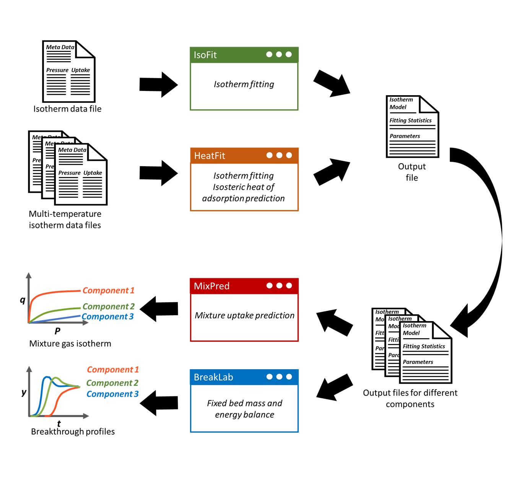

Input and output data files#
AIM modules IsoFit and HeatFit read isotherm data from input files and generate output files containing isotherm fitting results. The AIM integrated workflow allows the user to directly load output files from IsoFit and HeatFit into MixPred and BreakLab modules. The schematic below highlights the input/output files and workflow within AIM modules. Both input and output files have a well-defined, human-readable format to ensure accessibility to users with diverse backgrounds. In this section, we outline the supported input file formats and guidelines to facilitate isotherm data files preparation.
{kind=link}

Input File#
IsoFit and HeatFit can import isotherm data from
General input data files in the following formats: *.csv, *.txt, *.xlsx, *.dat.
Adsorption Information Format (AIF).
The general input data file contains tabular data with columns corresponding to pressure and adsorption uptake values. Additionally, the user can specify the meta information in the input file such as temperature value and units of pressure, adsorption uptake, and temperature. A typical input file for IsoFit and HeatFit modules is shown below.
#units_pressure Pa
#units_loading mol/kg
#units_temperature K
#temperature 298
1.0 0.0017917972
2.0 0.0035043503
3.0 0.005368788
4.0 0.0074401408
5.0 0.008703644
6.0 0.0103347517
The meta information tags are specified at the beginning of the input file followed by the isotherm data. The first column specifies the pressure values, while the second column specifies the gas uptake values.
We recommend the following guidelines for preparing the generic input data file
The first column of the isotherm data should contain pressure values, and the second column should contain gas adsorption uptake (adsorption loading) values.
The columns should be separated either by a single tab, whitespace, or comma.
The meta information should be specified at the beginning of the file followed by isotherm data.
The meta information requires specific tags which are listed in Table 1. The module will only search for and parse the tags listed in Table 1. Any additional tags will be ignored.
The tag names and values should be specified in the following manner:
Tag_1_Name \(\qquad\) Tag_1_ValueTag_2_Name \(\qquad\) Tag_2_Value…In the case of importing data from a spreadsheet (*.xlsx), please specify the data in the first sheet.
If the AIF file contains both adsorption and desorption data, only the adsorption data will be read. In case isotherm fitting using desorption data is required, please use a separate input file.
The temperature value is read only in HeatFit module. IsoFit ignores the temperature value.
In addition to isotherm data, IsoFit also requires saturation/total pressure (\(P_{0}\)) to calculate the relative pressure in the case when user choose either Auto or Dubinin-Astakhov, Klotz, and Do-Do models. The \(P_{0}\) can be specified via one of the following methods:
In the meta information of the isotherm data file using the tag listed in the Table below.
In the app itself using the \(P_{0}\) entry field.
By directly specifying the relative pressure values instead of pressure values in the isotherm data file. In this case, specify \(P_{0}=1\) in the \(P_{0}\) entry field.
Description |
General Input Data File |
AIF |
|---|---|---|
Pressure unit |
#units_pressure |
_units_pressure |
Gas adsorption uptake unit |
#units_loading |
_units_loading |
Saturation/total pressure |
#sat_pressure |
_adsorp_p0 |
Temperature value |
#temperature |
_expltl_temperature |
Temperature unit |
#units_temperature |
_units_temperature |
Sample files are available in the repository’s input-files directory. Copy a representative file and replace its data while preserving the metadata tags for a quick start with IsoFit or HeatFit.
Output files#
IsoFit and HeatFit generate an output containing the isotherm model name, fitted parameters, and fitting statistics. A typical output file from HeatFit is shown below.
*************************************************************************
********************HeatFit ISOTHERM FITTING RESULTS********************
*************************************************************************
Isotherm Model: DS-Langmuir
Reference Temperature: 273.00
Isotherm fit RMSE: 0.007864
Isotherm fit r^2: 1.000000
dH fit RMSE: 0.000908
Parameters
q_b_sat 2.251065
b 4.755850e-05
q_d_sat 1.981077
d 1.284321e-06
dH 2.571959e+01
*************************************************************************
Fitting statistics include Root Mean Square Error (RMSE) and \(r^2\) value. The output file from HeatFit also contains reference temperature used for fitting and fitted isosteric heat of adsorption values. The output file uses custom extension *.bliso to facilitate integrated workflow within AIM modules. However, the file itself is human-readable and can be opened with any text editor such as Notepad, WordPad etc. The fitted isotherm parameters in the output file can be directly loaded in MixPred and BreakLab modules for mixture adsorption prediction and breakthrough simulation, respectively. The user is advised not to modify the extension and keywords in the output file, as this can cause issues in isotherm parameter loading.